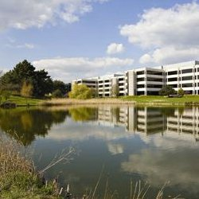

Lakeside Road Relays
incorporating The Hampshire Road Relay Championships
The Hampshire Road Race League, who organised this event on behalf of Hampshire Athletics, have decided not to stage the Road Relays in 2018, or until further notice.
In the three years since their revival, insufficient interest has been shown to make organising the event again worthwhile.
<